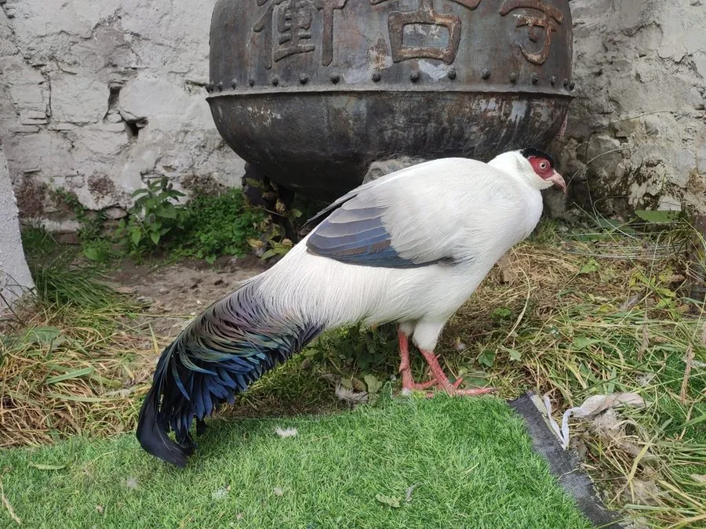

鸟类 · 动物界
白马鸡 Crossoptilon crossoptilon

通体洁白的马鸡，尾羽黑亮，脸部裸皮鲜红，耳羽簇雪白。仅分布于青藏高原东缘的高山针叶林，成群在杜鹃灌丛间觅食。
- 分类
- 门脊索动物门纲鸟纲目鸡形目科雉科属马鸡属
- 栖息环境
- 海拔 3000–4300 米的高山针叶林、杜鹃灌丛、林缘草甸与岩石坡地。
- 地理分布
- 中国青藏高原东缘，包括四川西部、青海东南部、西藏东部与云南西北部，为中国特有鸟。
- 保护级别
- IUCN 红色名录列为易危（VU）；中国国家一级保护野生动物，列入 CITES 附录一。
物种志
白马鸡体长约六十九至一百厘米，其中尾羽占很大比例，体重一千四百至二千五百克。通体乳白至灰白，头顶与后颈灰黑，尾羽黑褐色而具金属光泽，基部带灰白。脸部裸皮鲜红，耳羽簇白色向后延伸，形似短角。虹膜橙黄，嘴淡角黄色，脚红色，跗跖被羽。雌雄外形相似，雄鸟体型略大、距更发达。
它栖息于青藏高原东缘海拔三千米至四千三百米的高山针叶林、杜鹃灌丛与林缘草甸，常成十余只至数十只的群体活动，用强有力的爪刨开地面取食植物根茎、块茎、种子与昆虫。繁殖期在灌丛或岩石下地面营巢，每窝产卵四至七枚。白马鸡为中国特有鸟类，分布于四川西部、青海东南部、西藏东部与云南西北部。由于栖息地退化和人为干扰，种群数量下降，被列为易危物种和国家一级保护动物。
形态与习性
- 体长69–100 厘米（含长尾）
- 体重1400–2500 克
- 食性植物根茎、块茎、种子与昆虫
- 繁殖地面营巢，每窝 4–7 枚
- 分布青藏高原东缘，中国特有
- 保护级别国家一级；IUCN 易危
趣味知识
- 全身雪白，红色脸皮与黑色尾羽形成强烈对比。
- 常成群在雪线附近的杜鹃丛中刨食。
- 为中国特有鸟种，分布区局限于青藏高原东缘。